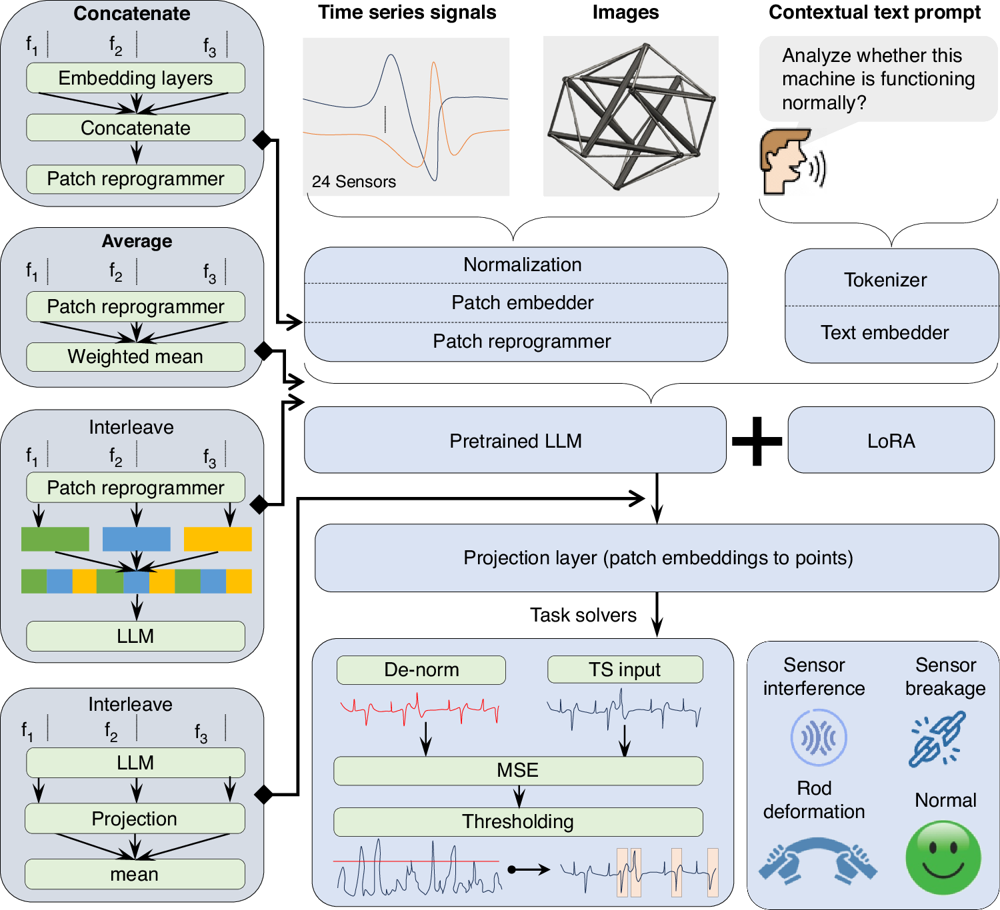

摘要解读
融合柔性传感器的形状识别六杆张拉整体自主状态认知系统：微调多模态大语言模型方法
Fine-tuned multimodal large language model for autonomous state cognition system of shape-recognition 6-bar tensegrity integrated with flexible sensors
解读更新 2026-09-25 10:30 · 依据公开摘要整理，未核验全文细节
摘要解读已完成，图文文章正在升级。以下保留现有摘要笔记，尚未按图文稿逐项复核。
【摘要级导读】本文面向六杆张拉整体系统，将微调多模态大语言模型、柔性传感器观测与形状重建结合，用于结构状态监测和故障诊断。[摘要] 解读：其阅读价值在于探索传感信息与结构形态信息如何共同服务状态认知。当前摘要仅概述技术组合及应用目标，没有模型配置、试验设置或性能结果，不能据此判断诊断精度、泛化能力及工程成熟度。
研究问题
【论文摘要】研究对象是“a six-bar tensegrity system”，任务是结构状态监测与故障诊断。[摘要] 解读：核心关注是如何利用观测信息认识结构状态，而非单纯生成文本。摘要未说明具体状态类别、故障类型及既有方法的困难，因此不能进一步界定其解决了哪些诊断瓶颈。
方法与路线
【论文摘要】方法主体为“Fine-tuned multimodal large language models”，并结合柔性传感器观测与形状重建。[摘要] 摘要未交代基础模型、输入编码、微调数据或融合机制，也未说明形状重建是输入、输出还是中间步骤，因此目前只能确认技术组成，不能还原完整算法流程。
创新与比较
值得核查的潜在方法特色，是把柔性传感、形状重建和微调多模态大语言模型放入同一结构状态认知任务。[摘要] 这只是依据摘要提出的创新线索，不等于已证实的原创贡献。现有资料没有相关工作比较，无法判断新意主要来自模型设计、信息融合还是系统集成。
证据与发现
【论文摘要】摘要给出的用途是“structural state monitoring and fault diagnosis”，但未报告任何实验结果。[摘要] 因此可确认作者所述方法的应用目标，不能确认监测或诊断已经达到何种效果，也不能将技术组合的描述转写成优于基线、识别准确或运行稳定等成果结论。
局限与边界
【资料局限】当前材料只有简短摘要，缺少数据规模、训练测试划分、评价指标、对照实验及不确定性分析。[摘要] 这些缺项限制了对有效性和可复现性的评估，但不代表论文全文没有相关内容。关于噪声敏感性、部署成本或失效边界，现阶段均无足够证据作出判断。
方向关联
状态监测与故障诊断直接对应智能运维，因此与给定方向具有明确关联。[摘要] 对结构设计和可靠性研究，形状信息与状态判断的结合可提供研究启发，但摘要没有涉及设计优化、寿命预测或失效概率，不能把这些邻近方向视为本文已完成或已验证的研究内容。
后续研究建议
后续获取全文时，先核对传感观测与形状重建的关系，再检查微调目标、故障标注及独立测试设置。若考虑迁移研究，可设计传感单模态、形状单模态与融合方案的对照，并考察未见状态下的表现。这些是建议的验证路径，不是摘要已报告的实验或作者结论。[摘要]
阅读建议
建议作为智能运维方向的方法线索优先筛读，重点关注多模态模型如何结合柔性传感观测与形状重建；是否值得深入复现，仍需全文证据。[摘要]
原图未改动。以下图注来自标注的来源，不据此补写摘要未报告的实验结论。
已取得的论文原图


图注译文与出处
传感器时序、结构图像与文本提示经过嵌入和模态对齐，进入采用 LoRA 微调的大模型，再由任务模块完成形态识别与异常诊断。
Zebing Mao et al.
原文图页 · CC BY-NC-ND 4.0查看公开摘要
Fine-tuned multimodal large language models combine flexible sensor observations and shape reconstruction for structural state monitoring and fault diagnosis in a six-bar tensegrity system.